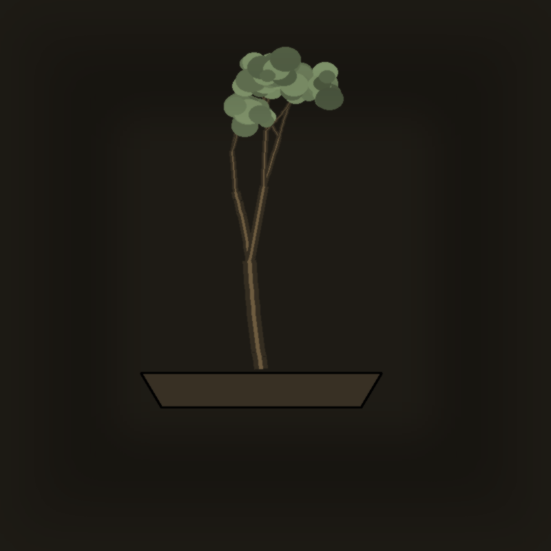
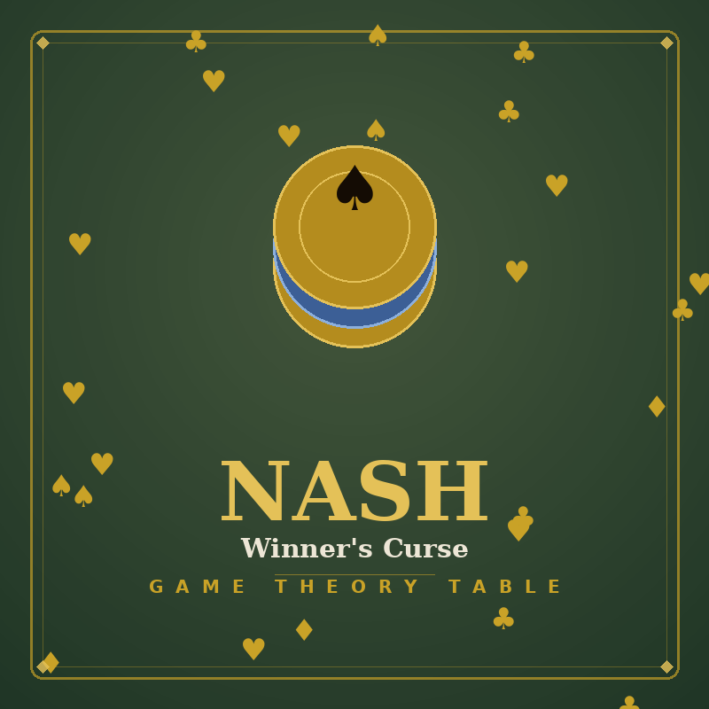
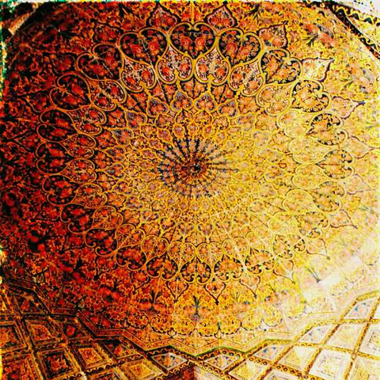
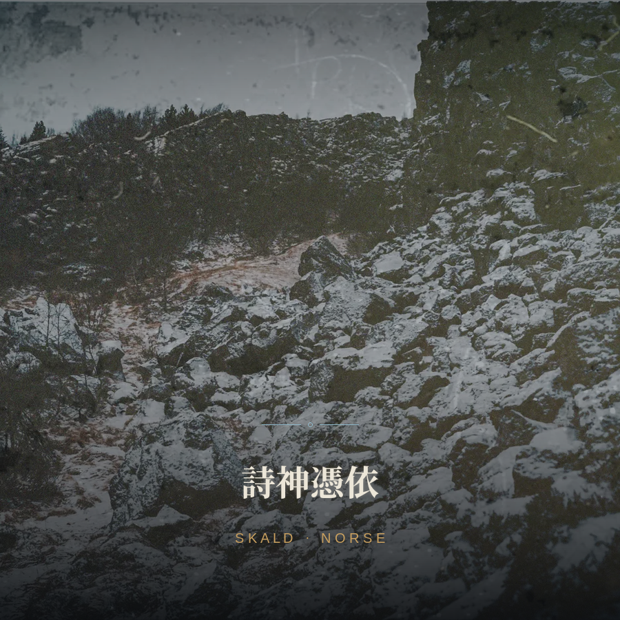
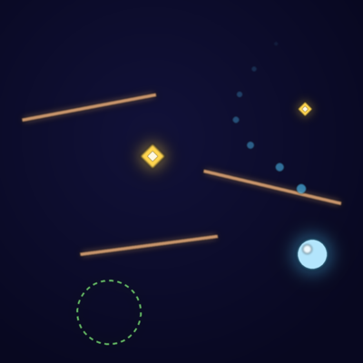
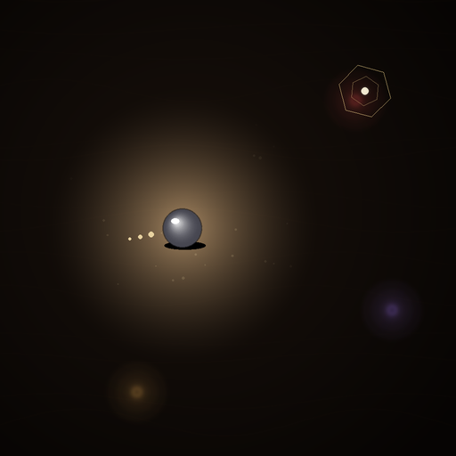
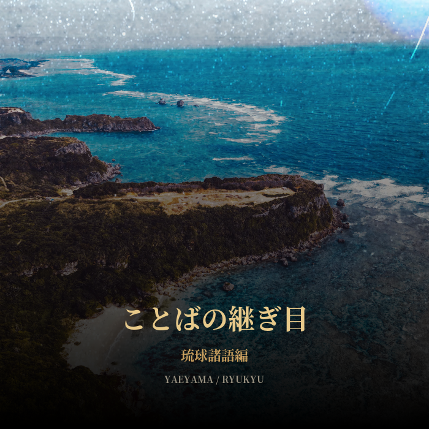
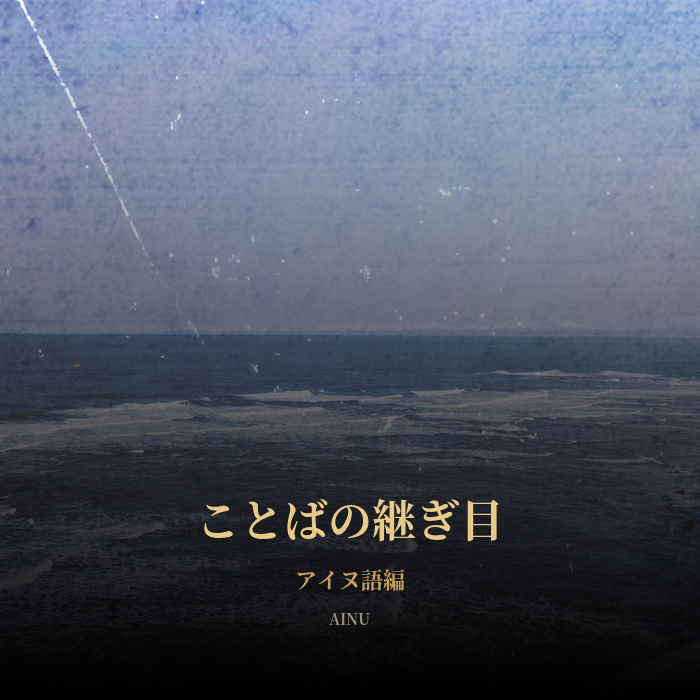
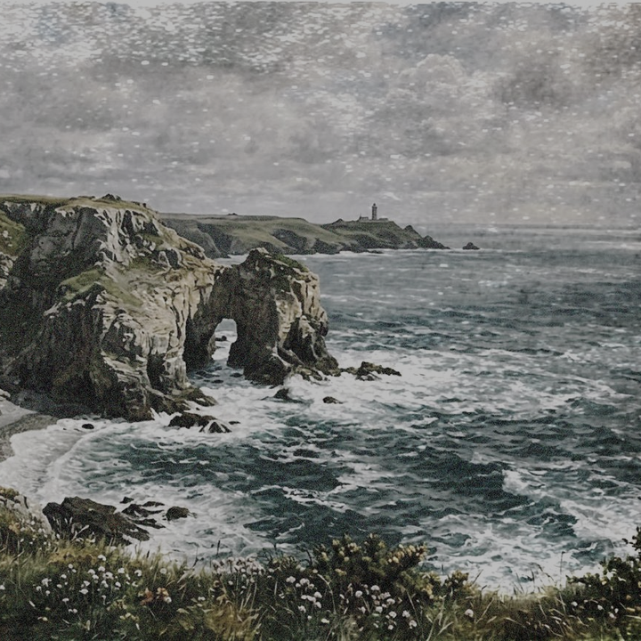

2026-08
型を崩す
Wabi-Sabi Bonsai
直幹・模様木・懸崖・文人木・双幹、5つの伝統様式をお題に、あえて崩す盆栽ゲーム。
完璧に型どおりに整えるほど評価が下がり、非対称・経年・自然な逸脱こそが得点になる。
松・楓・梅の3樹種は崩れの許容度そのものが異なり、鉢と季節も選べる。仕上げには
型式派と自由派、2人の講評が下る。
A bonsai styling game built around five traditional forms — formal upright, informal
upright, cascade, literati, twin trunk — where shaping one too perfectly costs you
points. Asymmetry, age, and natural deviation are what score. Pine, maple, and plum
each tolerate disorder differently; choose a pot and a season, then face two judges —
one formal, one free — at the end.
ブラウザで遊ぶ
Play in Browser

開発中
In Development
NASH -Winner's Curse-
NASH -Winner's Curse-
鹿狩り、チキンゲーム、ゼロサム、囚人のジレンマ——ゲーム理論の代表的な状況を、
秘密入札のオークションで追体験する多人数対戦プロトタイプ。10人のAIから3人を選んで対局。
落札額の差が大きいほど得点が下がる「勝者の呪い」、各カードのナッシュ均衡表示つき。
日英表示切替。
Stag Hunt, Chicken, Zero-Sum, Prisoner's Dilemma — a multiplayer prototype
where sealed-bid auctions recreate game theory's classic dilemmas. Choose
3 rivals from a roster of 10 AI opponents. Overpay by too wide a margin and
the Winner's Curse costs you points; every card shows its Nash equilibrium.
Switchable JA/EN interface.
ブラウザで遊ぶ
Play in Browser

2026-08
詩神憑依 -ペルシャ-
Muse-Possessed: Persia
ハーフェズ、ハイヤーム、ルーミー——ペルシャの三詩人から一人を選ぶと、
その声に憑かれて詩が紡がれる。詩人ごと80語、計240語の語彙カードから
5枚を選び、ガザル・ルバイヤート・マスナヴィーそれぞれの様式で一篇に。
ペルシャ語原文(アラビア文字・右横書き)と日本語訳を並べ、詩人と詩形の
プロフィールも読める。通信不要の完全オフライン生成。
Choose one of three Persian poets — Hafez, Khayyam, Rumi — and their
voice possesses the page. Pick five word cards from an 80-word pool
per poet (240 words total), and a verse takes shape in the classical
form of ghazal, rubaiyat, or masnavi. Persian script (right-to-left)
runs alongside a Japanese translation, with poet and form profiles
built in. Fully offline, no network required.
ブラウザで遊ぶ
Play in Browser
2026-08
駅、あるいは家
Station, or Home
トルストイ最期の家出を、「あの駅に着いたら終わり」という逆転ルールで辿り直す
ブラウザCYOA。体力・気力の2ゲージが道中の選択を左右し、気力が尽きるほど
地の文そのものが崩れていく。シェーンベルク「浄められた夜」に着想した
オリジナルBGM、ロシア語・英語・日本語の表示切替つき。
Retraces Tolstoy's final flight from home under one inverted rule: reaching
the historical station is the ending to avoid. Two gauges — stamina and
resolve — shape every choice, and the prose itself degrades as resolve
wears thin. Features an original score inspired by Schoenberg's
Verklärte Nacht, with switchable Russian, English, and Japanese display.
ブラウザで遊ぶ
Play in Browser

2026-08
詩神憑依 -北欧- SKALD
Muse-Possessed: SKALD
オーディン、トールら北欧8神からケニング・異名・動詞のカードを選ぶと、
その神が古ノルド語詩を詠む。名詞の格変化と動詞の実在活用を規則エンジンで
生成し、頭韻(stuðlar)と内韻(hendingar)を判定する、124語彙収録の言霊ゲーム。
Choose kenning, heiti, and verb cards for one of eight Norse gods — Odin,
Thor, and more — and they speak an Old Norse verse in return. A rule-based
engine handles noun declension and real verb conjugation, checking alliteration
(stuðlar) and internal rhyme (hendingar), across 124 words of vocabulary.
ブラウザで遊ぶ
Play in Browser

2026-08
グラビティ・バウンス
Gravity Bounce
画面をなぞって板を引き、落ちてくるボールを弾いて宝石とゴールへ導く、
リアルタイム物理パズル。重力の強さを自由に変えられる「重力フリーモード」を搭載、
全10ステージ。日英表示切替つき。
Trace planks onto the screen in real time to bounce a falling ball toward
gems and the goal. Includes a Free Gravity mode where you control the pull
yourself, across 10 stages. Switchable JA/EN interface.
ブラウザで遊ぶ
Play in Browser

2026-08
暗闇のドップラー
Doppler in the Dark
闇の中、姿の見えない気配が忍び寄る。近づけば音は高く、遠ざかれば低く ――
ドップラー効果だけを頼りに耳で進む、五夜のサバイバル・ステルス。
反響を放てば、一瞬だけ闇が晴れる。
Something unseen stalks you through the dark. It sounds higher as it
nears, lower as it recedes — a five-night survival stealth built
entirely on the Doppler effect. Send out a pulse, and the dark briefly parts.
ブラウザで遊ぶ
Play in Browser

2026-08
ことばの継ぎ目 — 琉球諸語編
Kotoba no Tsugime — Ryukyu Edition
打った日本語・英語の文の中から、辞書にある単語だけが、消えゆく方言に憑かれて
置き換わっていく。石垣・川平・波照間・与那国、4方言4,500語超を収録した、
絶滅危惧言語ドキュメンテーション・ゲーム。
Type a sentence in Japanese or English, and every word the dictionary
recognizes is possessed by a vanishing tongue. Four Yaeyama dialects —
Ishigaki, Kabira, Hateruma, Yonaguni — over 4,500 sourced words.
ブラウザで遊ぶ
Play in Browser

2026-08
ことばの継ぎ目 — アイヌ語編
Kotoba no Tsugime — Ainu Edition
翻訳はしない。文法が違いすぎるから。かわりに、単語カードとカテゴリー検索で
沙流方言の語彙を覚え、複合語という名の小さな世界観(熊は「山の神」、鮭は「神の魚」)
に触れる、正しさを最優先したアイヌ語ドキュメンテーション・ゲーム。
No auto-translation — the grammar is too different for that to be honest.
Instead: word cards, category search, and real compound words that carry a
worldview (a bear is "the mountain's god," salmon is "the god's fish").
An Ainu-language documentation game that puts accuracy first.
ブラウザで遊ぶ
Play in Browser

2026-08
言舌憑依
Ane's Tongue
標準語で語られた詩に、タップした瞬間、消えゆく方言が憑く。
ドーリック(スコットランド北東部)とシェットランド(北方諸島)、
二つの方言による詩行生成ツール。代名詞と動詞の活用が一致する
文法生成と、語彙当てクイズを収録。
The moment you tap, a vanishing dialect possesses a verse spoken
in standard English. A poetry generator built on two tongues —
Doric (northeast Scotland) and Shetland (the Northern Isles) —
with pronoun-verb agreement and a vocabulary quiz mode.
ブラウザで遊ぶ
Play in Browser

2026-07
輪廻転生チェス
Reincarnation Chess
駒を取ると、輪廻の輪へ投げ返される。より強く、あるいはより弱く、敵味方どちらの
駒としてか分からないまま盤上に生まれ変わる――そのまま輪廻を抜け出すこともある。
キングだけは決して転生しない。カルマ・縁・解脱、3つの掟を選んで対局できる。
日英表示切替つき。
Every captured piece is cast back onto the Wheel — it may return stronger,
weaker, or on either side of the board, or escape the cycle for good. Only
the King never reincarnates. Choose from three optional Laws of Rebirth —
Karma, Bond, and Enlightenment — before each match. Switchable JA/EN interface.
ブラウザで遊ぶ
Play in Browser

2026-07
安南将棋
Annan Shogi
駒が、後ろの駒の動きを借りる。読みを裏切られ続ける、伝統的な変則将棋。
AI対戦(強さ5段階)と、このアプリだけの「潮汐ルール」を搭載。日英表示切替つき。
A piece borrows the move of whatever's standing behind it — a traditional
shogi variant that keeps turning your reading upside down. Comes with an AI
opponent (5 difficulty levels) and an original Tide Rule. Switchable JA/EN interface.
ブラウザで遊ぶ
Play in Browser

2026-07
詩神憑依
Muse-Possessed
古典・現代ギリシア語、100語の単語カードから選ぶと、詩神が憑依して
ホメロス風の叙事詩を紡ぐ。古典ギリシア語・日本語・英語の三言語で
詩が表示される、ことば遊びのゲーム。
Choose from 100 word cards spanning Classical and Modern Greek, and
the Muse takes hold, weaving a Homeric epic verse. The poem appears
in Classical Greek, Japanese, and English — a small game about words.
ブラウザで遊ぶ
Play in Browser

2026-07
チャトランガ
Chaturanga
サイコロで動かせる駒が決まる、四人対抗の元祖将棋。対角の同盟と、
玉座を奪っての領地拡大が勝敗を分ける。二人制の古典ルールも収録、
日英表示切替つき。
A dice-driven ancestor of chess for four rival armies. Diagonal
alliances and throne annexation decide the battle — the classic
two-player ruleset is included too, with a switchable EN/JA interface.
ブラウザで遊ぶ
Play in Browser

2026-07
シュレーディンガーズチェス
Schrödinger's Chess
駒はすべて「?」から始まる、量子力学モチーフの変則チェス。配置はランダム、
正体は動かすまでわからない。デコヒーレンス、トンネル効果、量子もつれが
盤面を絶えず揺さぶる。
A quantum-mechanics-flavored chess variant where every piece starts as a "?".
Setup is random and identities stay hidden until you move them. Decoherence,
tunneling, and entanglement keep shaking up the board.
ブラウザで遊ぶ
Play in Browser

開発中
In Development
DODECIM(十二紋章戦)
DODECIM (Twelve-Sigil War)
レーン制のカードバトル。4つの紋章カテゴリと十二面ダイスが趨勢を決める、
均整のとれたファンタジー対戦ゲーム。
A lane-based card battler. Four sigil categories and a twelve-sided die
decide the tide of battle, in a balanced fantasy duel.
詳細を見る
View Details

公開中
Released
Blood Sigil(五つの魂)
Blood Sigil: Five Spirits
勝てば刻印、負ければ能力が覚醒する。5体の非対称なAIと対峙する、
ダークファンタジーのカード対戦。日英両対応。
Win, and you're marked with a Blood Sigil. Lose, and a dormant power
awakens. A dark fantasy card duel against five asymmetric AI opponents.
Japanese and English supported.
詳細を見る
View Details

2026-07
村のあさごはん
Village Breakfast
食料庫が空っぽの朝、うさぎとねこが食べ物を探しに村を出る、
ゆるくて温かい探索アドベンチャー。にわとりとの「あっちむいてホイ」、
くまとの「ハイアンドロー」勝負など、ちょっとしたミニゲームも。
A gentle exploration adventure — Rabbit and Cat search for breakfast
after the village storehouse turns up empty. Along the way: a game of
"Guess the Direction" with the chicken, and a High-Low card duel with the bear.
ブラウザで遊ぶ
Play in Browser